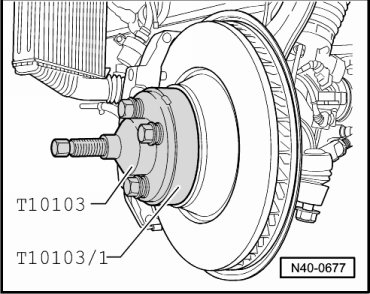
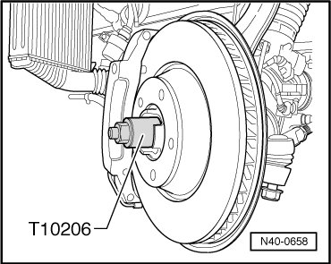

Drive Axle
Drive Axle
Special tools, testers and auxiliary items required
• Tensioner hooks (VW 552)
• Torque wrench (VAG 1332)
• Torque wrench (VAG 1601)
• Socket, nominal size 14 mm (T10099/1)
• Hub puller (T10103)
• Adapter plate (T10103/1)
• Mount (T10149)
• Ball joint puller (T10187)
• Seating tool (T10206)
• Socket, nominal size 32 mm (T10209)
Removing
CAUTION!
Before starting work, stabilizer bars must be coupled in vehicles with separable stabilizer bars. Otherwise, there is the danger of injury caused by unintentional separation.
- Remove 12 point nut.
• Only loosen and tighten 12 point nut if vehicle rests on its wheels (risk of accident!)
• Do not move vehicle when 12 point nut is loosened. Otherwise, wheel bearing may be damaged.
• If vehicle has to be moved with drive axle removed, outer joint must be installed and tightened to 150 Nm.
- Remove wheel and lift vehicle.
- Disconnect driveshaft from rear final drive. Use socket (T10099/1) for loosening bolts.
- Press off tie rod from wheel bearing housing.

- Press out drive axle.

- Ensure freedom of movement for joints when pressing out.
- Turn wheel hub far enough until one of the holes for wheel bolts is on top.
- Install wheel hub support (T10149) with wheel bolt.

- Press out upper control arm.

- Remove bolt of air spring shock absorber to lower control arm.
- Remove bracket for brake line from wheel bearing housing.
- Remove coupling rod from stabilizer bar.
- Pull bolt out of lower control arm.
- Lower the wheel bearing housing far enough so the drive axle can be removed.

- Remove drive axle.
Installing
During start of production, there was a change from bonded to non bonded drive axles. If a bonded drive axle is installed in the vehicle, the following three work steps must be performed additionally:
- Clean splines of outer joint and wheel hub of remaining locking fluid.
- Produce a metallic surface and degrease splines of outer joint and wheel hub.
- Apply locking compound (D 154 000 A1) onto splines of outer joint.
Rest of installation applies to both drive axles, note the following when installing:
- Insert outer joint as far as possible into wheel hub splines.
- Pull in drive axle until seated using fitting tool (T10206).

- Remove fitting tool (T10206).
Further installation is in the reverse sequence to removal.
Tightening Specifications